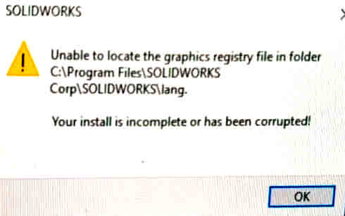

无法找到图形注册文件
无法在文件夹中找到图形注册表文件

方法1：用户权限
您可能对以下注册表项没有足够的权限:
1 | HKEY_CURRENT_USER\SOFTWARE\SolidWorks\SolidWorks [Version]\Performance\Graphics |
SOLIDWORKS®从此注册表位置收集信息，并将注册表项放在安装文件夹内的’ \lang ‘文件夹中，并在启动应用程序时尝试访问该键。如果应用程序无法访问该文件夹，则可能出现错误消息。
提供足够的权限可以解决此问题:
- 打开Windows®注册表编辑器，浏览到上面显示的注册表项。
- 右键单击图形键并选择权限。
- 确保为活动用户启用了完全控制和读取权限。
如果问题仍然存在，请尝试重命名完整的\SolidWorks注册表。这在某些情况下是有用的。